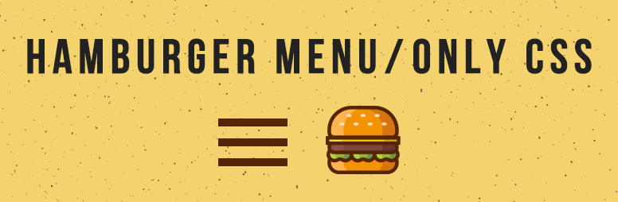

CSS만으로 햄버거 메뉴를 구현하는 방법

JavaScript 없이 CSS만 사용해서 열리고 닫히는 햄버거 메뉴를 만들 수 있습니다.
이번 포스팅에서는 그 방법을 소개합니다!
HTML 작성
<nav class="gMenu">
<input class="menu-btn" type="checkbox" id="menu-btn">
<label class="menu-icon" for="menu-btn">
<span class="navicon"></span>
</label>
<ul class="menu">
<li><a href="#">menu1</a></li>
<li><a href="#">menu2</a></li>
<li><a href="#">menu3</a></li>
</ul>
</nav>HTML 설명
HTML 작성 위치
기본적으로 어느 위치에 넣어도 동작하겠지만, header의 마지막이나 body의 종료 태그 직전에 배치하면 무난할 것이라고 생각합니다.
HTML 포인트
<nav class="gMenu">햄버거 메뉴는 대개 글로벌 메뉴로 사용하기 때문에 nav 태그로 작성합니다. 자신의 코드에 맞게 div로 변경해도 상관은 없지만 태그 안에는 class="gMenu"를 넣어주세요.
<input class="menu-btn" type="checkbox" id="menu-btn">메뉴의 열림·닫힘 상태를 결정하기 위한 체크박스입니다. 체크박스 자체는 필요 없으니 CSS로 감춰둡니다.
<label class="menu-icon" for="menu-btn">
<span class="navicon"></span>
</label>햄버거 메뉴라는 이름의 유래인 세 개의 줄(메뉴의 버튼)을 표시하는 부분입니다. span 태그로 선 하나를 만들고, 이와 동일한 크기의 선을 CSS 가상 요소(::before,::after)로 추가해서 세 줄로 만들겠습니다.
label 태그로 마크업하고 for="menu-btn" 속성을 넣으면, label 요소를 클릭했을 때 앞에서 만든 체크박스의 ON/OFF를 변경할 수 있습니다. 이는 체크박스가 CSS로 감춰져 있어도 동일하게 동작합니다.
<ul class="menu">
<li><a href="menu1.html">menu1</a></li>
<li><a href="menu2.html">menu2</a></li>
<li><a href="menu3.html">menu3</a></li>
</ul>세 줄 버튼을 클릭했을 때 나타날 메뉴 목록입니다. CSS를 통해 기본 모양을 만들고, 세 줄 버튼이 눌리기 전에는 overflow:hidden; max-height:0;으로 표시되지 않도록 설정합니다.
전반적인 구조 설명
가상 클래스 선택자 ':checked'와 일반형제결합자 '~'를 조합해서 햄버거 메뉴의 열림·닫힘 상태를 나타냅니다
- 1. 세 줄 버튼을 누르면 체크박스의 ON/OFF를 변경한다.
- 2. 체크박스가 ON일 때의 CSS는 ':checked'에 지정한다.
- 3. 체크박스가 ON일 때의 세 줄 버튼과 메뉴 목록의 CSS는 ':checked'와 '~'을 조합해서 지정한다.
- 4. 체크박스가 ON일 때 ⇒ 메뉴 목록 표시. 세 줄 버튼은 ✕모양으로.
- 5. 체크박스가 OFF일 때 ⇒ 메뉴 목록 숨김. 세 줄 버튼은 세 줄 모양으로.
CSS 작성
/* 메뉴를 화면 상단에 고정 배치합니다 */
.gMenu {
position: fixed;
right: 0;
top: 0;
width: 100%;
z-index: 99;
}
/* 세 줄 버튼을 화면 오른쪽 위에 고정 배치합니다 */
.gMenu .menu-icon {
cursor: pointer;
position: absolute;
right: 10px;
top: 12px;
padding-top: 5px;
height: 12px;
}
/* 세 줄 버튼의 가운데 선을 지정합니다 */
.gMenu .menu-icon .navicon {
background: #ffc107; /* 색상은 자유롭게 선택합니다 */
display: block;
height: 2px; /* 두께 */
width: 31px; /* 크기 */
position: relative;
transition: background .4s ease-out; /* 형태가 바뀔 때의 애니메이션 */
}
/* 세 줄 버튼의 위아래 선을 가상 요소로 추가 */
.gMenu .menu-icon .navicon::before,
.gMenu .menu-icon .navicon::after {
background: #ffc107; /* 색상은 자유롭게 선택합니다 */
content: '';
display: block;
height: 100%;
position: absolute;
transition: all .4s ease-out; /* 형태가 바뀔 때의 애니메이션 */
width: 100%;
}
.gMenu .menu-icon .navicon::before {top: 10px;} /* 가운데보다 약간 위쪽에 배치합니다 */
.gMenu .menu-icon .navicon::after {top: -10px;} /* 가운데보다 약간 아래쪽에 배치합니다 */
/* 표시될 메뉴 목록입니다 */
.gMenu .menu {
background-color: rgba(255,255,255,0.9);
overflow: hidden;
max-height: 0; /* ★처음에는 높이를 0으로 해서 숨김 상태로 */
transition: max-height .6s; /* 표시될 때의 애니메이션 */
text-align: center;
}
/* 메뉴 항목의 디자인입니다 */
.gMenu .menu li:first-of-type {
padding-top: 50px;
}
.gMenu .menu li a {
display: block;
padding: 24px 20px;
text-decoration: none;
text-transform: uppercase;
}
.gMenu .menu li a:hover {
background-color: #f4f4f4;
}
/* 체크박스는 항상 숨깁니다 */
.gMenu .menu-btn {
display: none;
}
/* ▼▼▼아래는 체크박스가 ON일 때의 상태입니다▼▼▼ */
.gMenu .menu-btn:checked ~ .menu {
max-height: 338px; /* ★체크박스가 ON일 때 높이를 338px로 표시합니다 */
transition: max-height .6s;
}
/* 세 줄 버튼의 가운데 선을 숨김 상태로 만듭니다 */
.gMenu .menu-btn:checked ~ .menu-icon .navicon {background: transparent;}
/* 세 줄 버튼의 위아래 선을 45도 기울여서 ✕ 모양으로 만듭니다 */
.gMenu .menu-btn:checked ~ .menu-icon .navicon::before {transform: rotate(-45deg);top: 0;}
.gMenu .menu-btn:checked ~ .menu-icon .navicon::after {transform: rotate(45deg);top: 0;}■CSS 포인트
.gMenu .menu-btn:checked ~ .menu {CSS 적용 방법
CSS를 기존 CSS 파일에 추가할 때
위에서 작성한 CSS 코드를 기존 CSS 파일 가장 아래에 복사&붙여넣기합니다.
CSS를 외부 파일로 분리할 때
<link rel="stylesheet" href="menu.css">데모 페이지
동작 확인용 페이지는 여기에 있습니다.